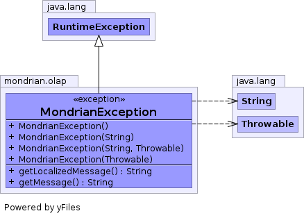

public class MondrianException extends RuntimeException
org.eigenbase.xom,
Serialized Form
| Constructor and Description |
|---|
MondrianException() |
MondrianException(String message) |
MondrianException(String message,
Throwable cause) |
MondrianException(Throwable cause) |
| Modifier and Type | Method and Description |
|---|---|
String |
getLocalizedMessage() |
String |
getMessage() |
addSuppressed, fillInStackTrace, getCause, getStackTrace, getSuppressed, initCause, printStackTrace, printStackTrace, printStackTrace, setStackTrace, toStringpublic MondrianException()
public MondrianException(Throwable cause)
public MondrianException(String message)
public MondrianException(String message, Throwable cause)
public String getLocalizedMessage()
getLocalizedMessage in class Throwablepublic String getMessage()
getMessage in class Throwable